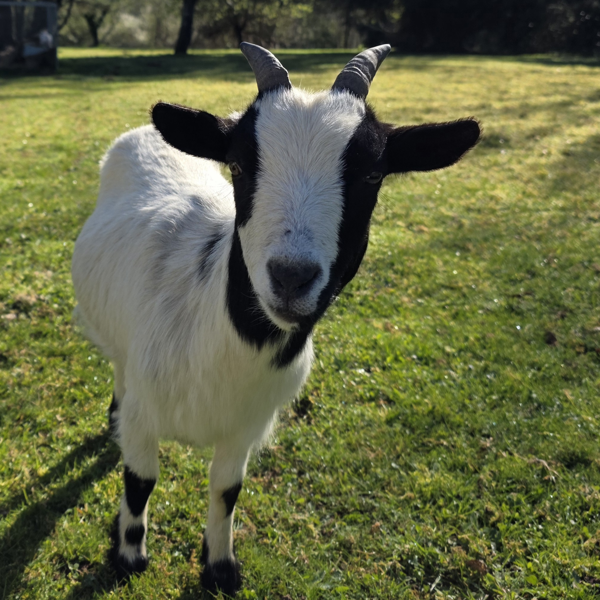
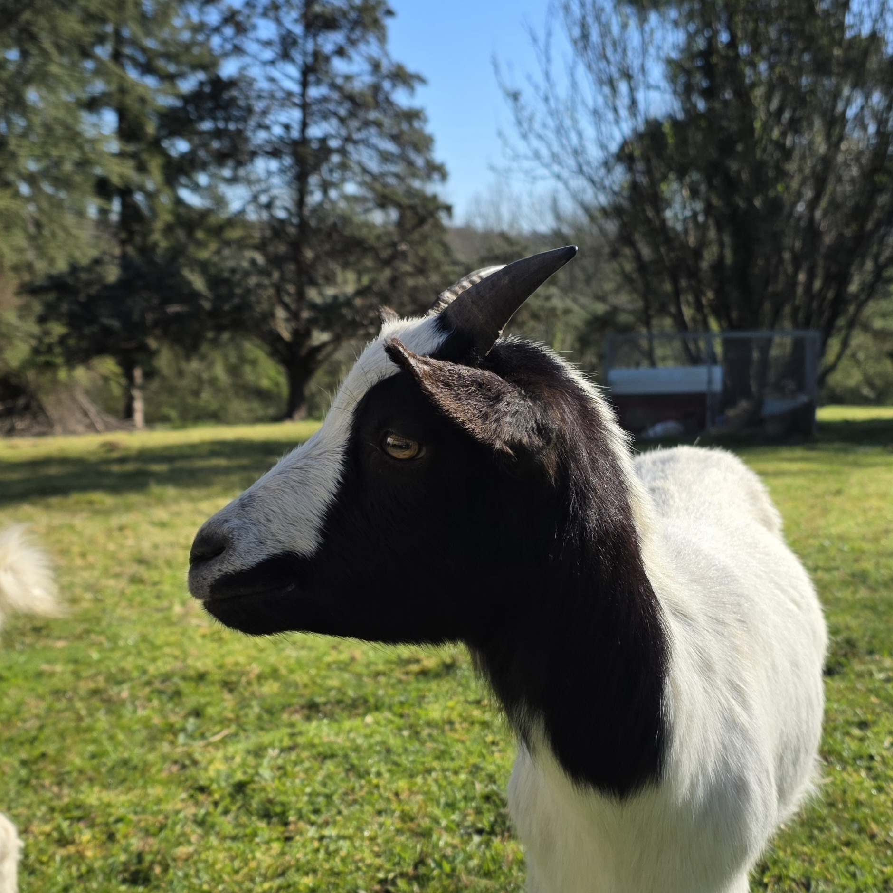

Informations générales
Race : Chèvre naine miniature
Âge : Née le 03/02/2024
Sexe : Femelle
Statut : Maman de Bounty
Origine : Même élevage que Câlimé (sans lien de parenté)
Vie à la ferme
Oréo est la maman de Bounty, qu’elle a eu avec Câlimé. Après sa naissance, il a été décidé de garder sa fille à la ferme, à la fois parce qu’elle était la première, mais aussi pour permettre à Oréo de ne pas rester seule. En effet, Rhino, la chef du groupe, avait tendance à rester principalement avec sa demi-sœur Aspro. Aujourd’hui, Oréo et Bounty sont devenues inséparables, formant un duo mère-fille très fusionnel.
Caractère
Oréo est la plus douce et la plus gentille des chèvres de la ferme. Très calme et affectueuse, elle apporte une vraie sérénité au troupeau.
La petite histoire 😄
Oréo doit son nom à sa robe si particulière, notamment au niveau de son visage. Noir, blanc… avec un contraste bien marqué… Ça ne te rappelle rien ? 😉 Un petit clin d’œil gourmand qui lui va parfaitement bien !



é